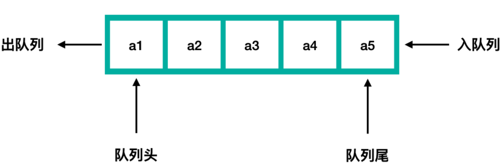

# 什么是队列
队列是一种线性的数据结构，队列的起始位置是队头，队列的结束位置是队尾。往队列中插入数据时只能从队尾插入（入队），从队列中取数据时，只能在队头取得数据（出队）。
队列先进后出。

队列中应该有两个指针来指向队头和队尾。
队列中的每个结点都有一个尾指针，尾指针指向下一个结点。
# 队列类的实现
我们使用 c++ 来实现队列，首先队列由一个个结点构成，那么我们就要先实现这个结点。
typedef int type; // 懂得都懂 | |
struct Node { // 队列的结点结构 | |
struct Node* next; // 指向下一个结点 | |
type data; // 数据 | |
}; |
接下来就可以实现队列类了
class Queue {// 队列类 | |
public: | |
Queue(); // 队列构造函数 | |
int InQueue(type obj); // 入队方法 | |
int OutQueue(); // 出队方法 | |
int ShowQueue(); // 遍历队列 | |
void DelQueue(); // 删除整个队列 | |
private: | |
struct Node* Head;// 队头指针 | |
struct Node* End; // 队尾指针 | |
struct Node* temp; // 临时变量，用于 | |
}; |
# 队列的构造函数实现
虽说队列是在队头取数据，但是在这里，真正存数据的队头是队列的第一个结点的后一个结点，也就是说我们队列的第一个结点只是起到一个定位队列位置的作用。
Queue::Queue() | |
{ | |
//new 一个队列的头结点，也是队列中第一个结点，这个结点不存数据 | |
this->Head = new Node; | |
if (this->Head == nullptr) { | |
// 如果分配空间失败则构造失败 | |
std::cout<<"构造失败" << std::endl; | |
} | |
// 结点的尾指针置空 | |
this->Head->next = nullptr; | |
// 因为现在是头一个结点所以它既是队头也是队尾 | |
this->End = Head; | |
} |
# 队列的入队操作实现
# 队列中没用任何结点的情况
我们可以通过判断 Head 指针的尾指针是否为 nullptr 以及 Head 和 End 指针是否相等来判断当前队列是否为空。
如果为空则可以进行下一步操作。类中的 Head 指针指向队列的头一个结点，但是这个结点不存数据，于是我们 new 一个新结点，然后让一个临时变量 temp 指向新结点，之后将数据存放到新结点中，新结点的尾指针指向空。然后将 Head 的尾指针指向 temp，最后让 End 指针也指向 temp，这样就完成了。
# 队列中有结点的情况下
那么我们直接 new 一块空间，然后让临时变量 temp 指向这个结点，然后存放数据，将尾指针置空。之后让原来的 End 指针指向的结点的尾指针指向这个新结点。之后让 End 指针指向这个新结点。
代码实现：
int Queue::InQueue(type obj) | |
{ | |
if (this->Head->next == nullptr && this->Head == this->End) { | |
// 如果队头的尾结点为空以及队头和队尾是同一个结点，那么代表当前队列为空 | |
// 注意：队列的起始结点不存数据 | |
//new 一个新结点 | |
this->temp = new Node; | |
// 队头结点的尾指针指向新结点 | |
this->Head->next = this->temp; | |
// 存数据 | |
this->temp->data = obj; | |
// 将 end 指针指向新结点，因为这个时候新结点就是队尾结点 | |
this->End = this->temp; | |
return 0; | |
} | |
this->temp = new Node; | |
if (this->temp == nullptr) { | |
std::cout << "入队失败" << std::endl; | |
return -1; | |
} | |
// 用来原来队尾的尾指针指向新的结点 | |
this->End->next = this->temp; | |
// 将数据存入新结点 | |
this->temp->data = obj; | |
// 此时新结点已经是队尾了，所以尾指针指向空 | |
this->temp->next = nullptr; | |
// 此时新结点已经是队尾了，所以队尾指针指向这个地方 | |
this->End = this->temp; | |
return 0; | |
} |
# 队列的出队操作实现
# 队列为空的情况
因为我们队列的头一个结点不存数据，如果我们的队列正好只有这一个不存数据的结点，那么代表现在的队列是空的，我们可以不做任何操作。
我们可以通过判断 Head 指针指向的结点的尾指针是否为 nullptr 以及 Head 和 End 指针是否一致来确定当前的队列是否为空。
# 队列不为空的情况
使用临时变量 temp 记录真正存放数据的第一个结点，也就是 Head 指向的结点的尾指针指向的结点。
然后我们让 Head 的尾指针指向 temp 的尾指针指向的结点，然后我们对这个要出队的 temp 结点进行操作后就可以使用 delete 来释放掉 temp 这个指针即可。
代码实现：
int Queue::OutQueue() | |
{ | |
if (this->Head->next == nullptr && this->End == this->Head) { | |
// 如果队头的尾指针为空，且队头指针队尾指针指向同一个位置 | |
// 则代表当前在队列中的头一个结点，因为队列中头一个结点没有数据所以不做操作 | |
return 0; | |
} | |
// 记录要出队的结点 | |
this->temp = this->Head->next; | |
// 队列头结点出队，则队头往后移动一个结点 | |
this->Head->next = this->temp->next; | |
// 出队时操作 | |
std::cout << this->temp->data << std::endl; | |
// 删除结点 | |
delete this->temp; | |
return 0; |
# 遍历队列方法的实现
已知第一个结点也就是 Head 指向的结点不存放数据，如果第一个结点的尾指针为空，则代表当前队列为空，所以我们没有数据要用来遍历，于是不作操作。
如果队列不为空，则使用临时变量 temp 来记录第一个存放数据的结点。然后开始不断向后遍历，我们可以通过判断 temp 结点的尾指针是否为 nullptr 来判断是否到达队尾。
代码实现：
int Queue::ShowQueue() | |
{ | |
if (this->Head->next == nullptr) { | |
// 队列的第一个结点不存数据，如果第一个结点的尾结点为空则代表队列为空 | |
return -1; | |
} | |
this->temp = this->Head->next; | |
while (this->temp->next != nullptr) { | |
// 打印 | |
std::cout << this->temp->data << std::endl; | |
// 指向下一个结点 | |
this->temp = this->temp->next; | |
} | |
// 不要漏掉最后一个结点 | |
std::cout << this->temp->data << std::endl; | |
return 0; | |
} |
# 删除整个队列方法的实现
如队列为空（只剩下 Head 指向的结点，此时 End 也会指向 Head 指向的位置）则直接释放掉 Head 指向的那片内存空间，然后将 Head 指针和 End 指针置为 nullptr 即可。
如果队列不为空则使用临时变量 temp 记录第一个存数据的结点，然后释放掉 Head 指向的位置。这时 temp 开始循环遍历，然后让 Head 记录当前 temp 指向的结点，temp 再记录 temp 的尾指针指向的结点，然后再释放 Head 指向的结点。
以此类推，直到 temp 的尾指针为空时，退出循环，然后释放掉 Head 指向的结点。然后将 temp，Head，End 指针都置为 nullptr。
至此完成整个队列的释放。
注意：释放完整个队列后就不要再对其进行任何操作了，否则会出错。
代码实现：
void Queue::DelQueue() | |
{ | |
if (this->Head->next == nullptr) { | |
// 队列的第一个结点不存数据，如果第一个结点的尾结点为空则代表队列为空 | |
// 只需释放掉第一个不存数据的结点即可 | |
delete this->Head; | |
return; | |
} | |
//temp 临时变量记录第一存放数据的结点 | |
this->temp = this->Head->next; | |
// 开始遍历 | |
while (temp->next != nullptr) { | |
// 释放 Head，因为 Head 会不断更新，并且慢 temp 一步 | |
delete this->Head; | |
// 更新 Head 为 temp 指向的位置 | |
this->Head = this->temp; | |
// 更新 temp，让其指向下一个结点 | |
this->temp = this->Head->next; | |
} | |
// 当 temp 的尾指针指向空时代表已经到达了尾部 | |
// 释放掉 Head | |
delete this->Head; | |
// 将指针置为空 | |
this->Head = nullptr; | |
this->End = nullptr; | |
this->temp = nullptr; | |
} |